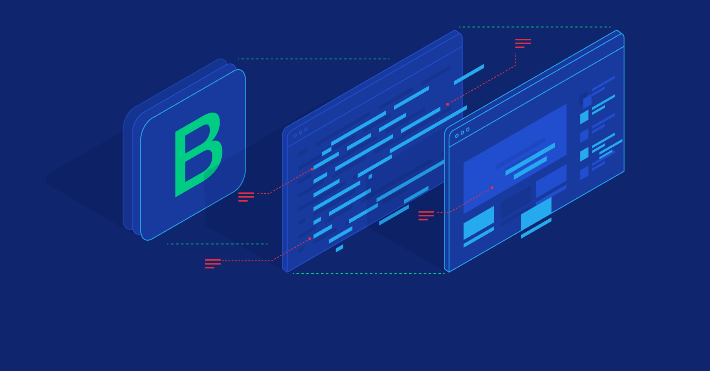

Background
Saya Fransiscus Dharma Hadi Prayoga, lahir di Yogyakarta pada tanggal 1 April 2003. Sejak kecil saya telah menunjukkan minat dalam teknologi dan ingin terus mengembangkan kemampuan saya dalam bidang ini. Oleh karena itu, saya memutuskan untuk melanjutkan studi saya di Universitas Indraprasta PGRI, dan saat ini saya sedang menempuh pendidikan S1 Teknik Informatika di semester 6. Sebagai seorang mahasiswa Teknik Informatika, saya selalu mencari peluang untuk memperluas pengetahuan dan keterampilan saya di bidang teknologi informasi. Saya percaya bahwa kemampuan teknis yang baik akan sangat bermanfaat untuk karir saya di masa depan. Oleh karena itu, saya selalu berusaha untuk belajar dengan tekun dan memperluas jaringan sosial dan profesional saya untuk mencapai tujuan saya.
Hobby
Mengeksplorasi Bootstrap

Saya adalah seseorang yang memiliki hobi mengeksplorasi Bootstrap untuk mencari desain web yang cocok dengan saya, tetapi saya mengalami kesulitan dalam membuat website tanpa menggunakan framework seperti Bootstrap. Saya sadar bahwa Bootstrap sangat membantu dalam membuat tampilan website yang lebih menarik dan fungsional. Namun, ketika harus membuat website tanpa menggunakan framework seperti Bootstrap, saya merasa sedikit kesulitan dan terkadang merasa tidak yakin dengan desain website yang saya buat. Saya sering mencoba untuk mempelajari teknik-teknik desain web yang lebih tradisional dan dasar, seperti HTML, CSS, dan JavaScript, tetapi masih merasa terbatas dalam menciptakan desain website yang memuaskan.
Meskipun demikian, saya tidak ingin kehilangan semangat dan antusiasme saya dalam mengeksplorasi desain web. Saya masih akan terus mencoba dan mempelajari teknik-teknik baru dalam membuat tampilan website yang lebih menarik dan fungsional.
Bermain Gitar
Saya merupakan seseorang yang memiliki hobi bermain gitar untuk mengisi waktu luang. Saya bukanlah seorang musisi profesional, namun saya sangat menikmati momen ketika saya bisa memainkan gitar dan menciptakan suara yang indah. Saya tidak memiliki keahlian yang tinggi dalam bermain gitar, tetapi saya terus belajar dan berlatih agar semakin mahir. Saya juga senang mencoba memainkan lagu-lagu baru atau mengeksplorasi teknik bermain gitar yang berbeda. Bagi saya, bermain gitar adalah hobi yang sangat menyenangkan dan bermanfaat. Selain dapat mengisi waktu luang, saya juga merasa lebih rileks dan tenang setelah bermain gitar.
Mendengarkan Musik
Saya adalah seseorang yang memiliki hobi mendengarkan musik di saat belajar, bekerja, maupun saat waktu luang. Saya sangat menikmati momen ketika bisa mendengarkan musik favorit saya dan merasakan alunan melodi yang mengalun di telinga. Jenis musik yang paling sering saya dengarkan adalah jazz, rock, ballad, pop, dan beberapa musik country. Saya suka mencoba mendengarkan berbagai jenis musik, namun jenis musik tersebut yang paling sering menemani saya dalam kegiatan sehari-hari. Bagi saya, mendengarkan musik adalah cara yang menyenangkan dan efektif untuk merelaksasi pikiran dan menenangkan diri. Musik juga dapat menjadi inspirasi bagi saya untuk mengeksplorasi ide-ide kreatif dan membuat saya merasa lebih produktif dalam melakukan kegiatan sehari-hari.
Personality
Saya adalah seorang yang memiliki karakteristik kepribadian yang kuat dan energik. Saya selalu bersemangat dalam menjalani kehidupan sehari-hari dan memiliki sikap pantang menyerah dalam mencapai tujuan saya. Saya lebih suka berbicara langsung dan jelas dalam menyampaikan pikiran dan pendapat saya, serta cenderung lebih suka bekerja dalam lingkungan yang kompetitif. Saya sangat memperhatikan detail dan fokus pada pencapaian tujuan, dan kadang-kadang terlalu keras pada diri sendiri dan orang lain ketika mencapai tujuan. Meskipun begitu, saya selalu berusaha untuk mengambil waktu untuk diri sendiri dan bersantai.
Interest
Saya sangat tertarik dengan dunia cloud, khususnya cloud server dan cloud computing. Saya senang mempelajari cara kerja cloud, bagaimana data dapat disimpan secara aman dan mudah diakses, dan bagaimana infrastruktur cloud dapat ditingkatkan untuk menangani kebutuhan pengguna yang semakin meningkat.
Saya juga tertarik dengan perkembangan teknologi penyimpanan cloud yang semakin pesat dan inovatif, seperti teknologi virtualisasi dan software-defined storage. Saya bersemangat untuk terlibat dalam proyek-proyek yang memungkinkan saya memperdalam pemahaman saya tentang teknologi cloud dan menyediakan solusi terbaik untuk kebutuhan bisnis dan industri.
Saya percaya bahwa cloud computing akan terus berkembang dan menjadi bagian penting dari masa depan teknologi informasi, dan saya siap untuk berpartisipasi di dalamnya.